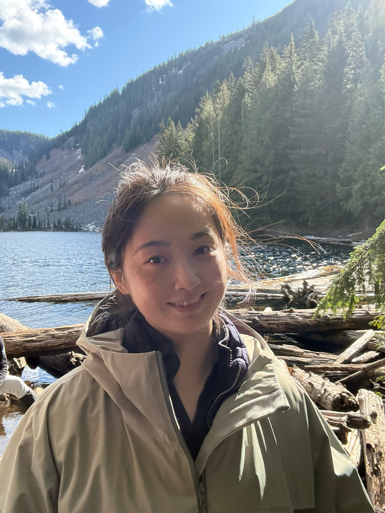

Introducing the Department of Architecture and Built Environment
A bilingual welcome piece introducing DABE to prospective Chinese-speaking students — covering faculty, programs, and campus culture.
→
Graduate student at Northeastern University Seattle. Former International Student Ambassador at the University of Nottingham, with experience in student community support, content creation, and event organization.

I'm Haoxuan (Hao) Tang, a first-year graduate student in Computer Software Engineering at Northeastern University's Seattle campus. My background spans architecture, urban design, and project management — fields that are fundamentally about shaping how people experience shared spaces.
At the University of Nottingham, I served for nearly a year as an International Student Ambassador in the Faculty of Engineering — a formal, paid role where I ran student Q&A sessions, managed community channels, organized events, and helped hundreds of prospective students navigate a new country and academic system.
I know what it's like to arrive somewhere unfamiliar and figure it out. That experience shapes how I show up for others.
COMMUNITY & LEADERSHIP ROLES
During my time as an International Student Ambassador at the University of Nottingham (2022–2023), I contributed to the Faculty of Engineering's WeChat Official Account — producing articles spanning faculty introductions, student interviews, event coverage, travel features, and graduation showcases, reaching Chinese-speaking prospective students worldwide.
A bilingual welcome piece introducing DABE to prospective Chinese-speaking students — covering faculty, programs, and campus culture.
Featured photographer & videographer. My images of New York, the Grand Canyon, and the West Coast documented student life beyond the classroom.
A student-facing interview series profiling the academic journey and life experience of graduate students in the Faculty.
Coverage of an in-person social gathering for graduate students — capturing the energy of community events we helped organize.
Promotion for a series of online Q&A sessions connecting admitted students with faculty and current students before arrival.
Coverage of the 2023 end-of-year show. My own design project and written reflection were featured in this piece.
Moderated a dedicated WeChat group serving 100+ prospective and admitted students over 12 months. Hosted regular online office hours (Mon–Fri, 20:00–21:00 BJT) to answer questions in real time about academic programs, campus life, and student resources.
Compiled and maintained a comprehensive 206-question FAQ document across 9 categories — covering accommodation, visa processes, software resources, course structure, career pathways, and daily life in the UK — designed to help students navigate their transition with confidence.
Co-organized virtual onboarding sessions (Tea Talk series) and in-person social gatherings for the graduate student community. Managed end-to-end logistics: promotional design, stakeholder coordination, venue setup, and post-event follow-up.
Led campus tours for prospective students and families, and served as a student panelist at Faculty recruitment events — helping international applicants get an authentic, peer-to-peer perspective on graduate life at Nottingham.
Before pivoting to software engineering, I spent years working at the intersection of design, spatial thinking, and community impact — as an urban designer, a graduate student in sustainable urban design, and a student ambassador who created visual content for a global audience.
This background directly informs my ambassador work: I designed promotional materials for Faculty events, produced photography and video for the WeChat Official Account, and brought a visual storytelling lens to everything from campus tours to graduation showcases.
"This program gave me a complete and systematic opportunity to learn urban design, broadening my horizons considerably."
— Haoxuan Tang, MArch Sustainable Urban Design 2022–23, featured in exhibit!23